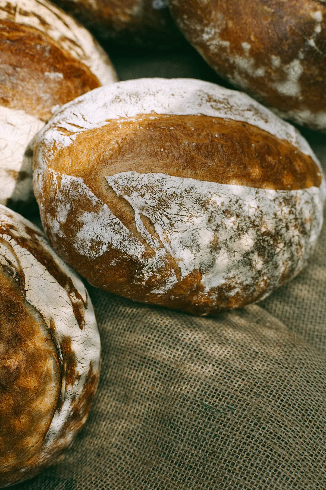
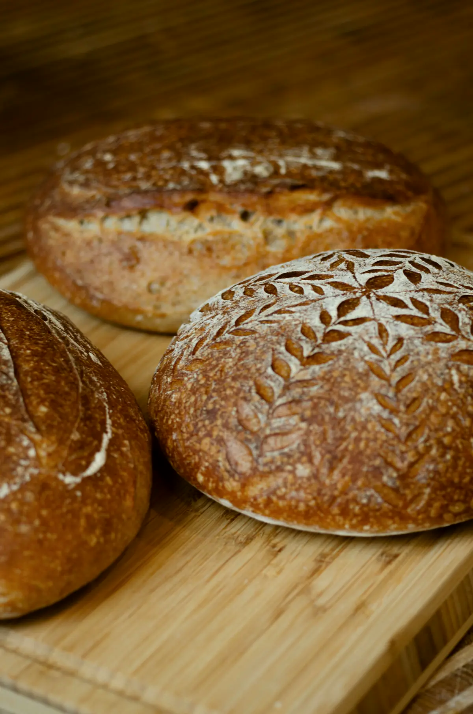
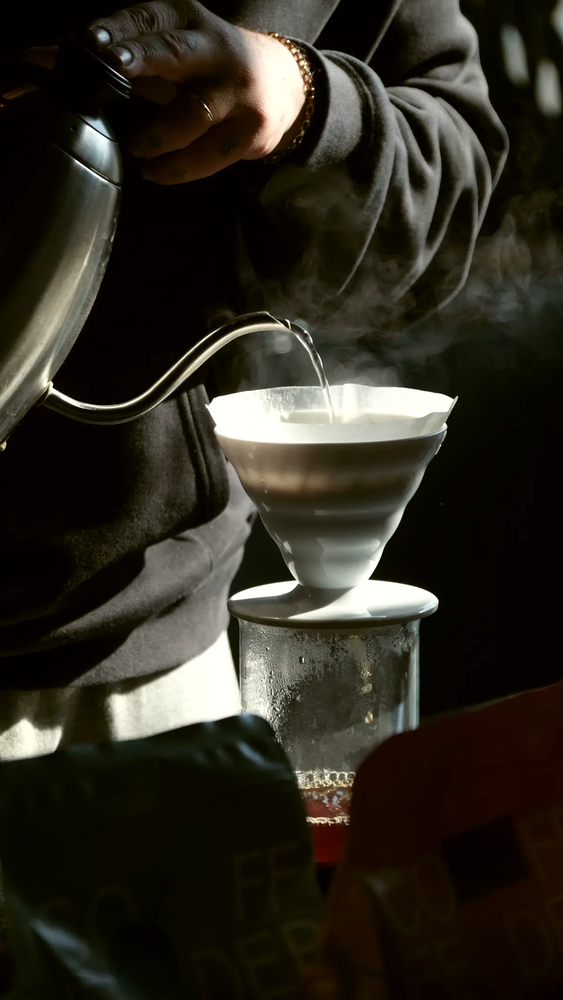

Mercearia fina contemporânea: fundo cor de manteiga, verde-oliva profundo e uma serifa condensada que fala alto sem gritar. A vitrine da madrugada vira a "comanda do dia", um bilhete com os horários.
Referências: Graza (serifa condensada + um acento só no CTA), Bread Ahead (produto como textura), Flamingo Estate (natureza-morta de produto), Blue Bottle (cor de marca como detalhe), Bourke Street (ritmo de seções creme).
Paleta
Manteiga #F2E6C6fundo principal Oliva #2E3626texto e seções escuras Rapadura #5E4A2Etexto secundário Forno #B4471Facento: só CTA e "agora" Milho #E3D2A6faixas e linhas Madrugada #1F2A44detalhe: só a comanda da vitrine Tipografia: Instrument Serif + Figtree
O que sai do forno hoje
Café do Maciço de Baturité
Grão sombreado, torrado em lotes pequenos toda segunda. O coado sai na hora, na V60, com água a 92 °C.
06:00 · 09:30 · R$ 28
Instrument Serif (condensada, com itálico) em tamanhos enormes para títulos e preços; Figtree para texto e interface. A condensação deixa frases longas caberem em 2 linhas grandes.
Botões e interface
Pedir pelo WhatsAppVer fornadas de hoje
PãesDoces e bolosCaféBrunch de sábado
08:00Pão de queijo coalhosaiu às 8h
agora, 9h12
09:30Focaccia de queijo coalho e mel de engenhono forno
Pílula sólida forno com texto manteiga (raio total); secundário em pílula com borda oliva de 1 px; abas em pílulas pequenas. Acima: o menu depois de rolar.
Tratamento de foto



Natureza-morta de produto com luz de janela e sombras macias, muitas vistas de cima (casca, cestos, potes de rapadura e manteiga da terra); faixas full-bleed de textura entre seções.
Motion (2 exemplos)
- Títulos entram por máscara de linha com o itálico chegando 0,1 s depois; preços do cardápio rolam como números de balança ao trocar de aba.
- Faixas de foto full-bleed fazem parallax lento e a "comanda" da vitrine desliza para dentro e marca o horário atual; no processo, o pino horizontal mostra as etapas como bilhetes sobre a faixa de foto.
Os 3 problemas da v1
- Menu: barra manteiga sólida com fio oliva; ao rolar ganha 92% de opacidade e desfoque e some ao descer, voltando ao subir. Hero começa abaixo da barra.
- Vãos: grade de 12 colunas com faixas de foto de ponta a ponta separando seções; nada de célula vazia: o bento vira duas linhas (foto larga + 3 textos).
- Hierarquia: o título condensado de 150 px é o dominante; a comanda e a foto são coadjuvantes; corpo sempre 17 px; respiro de 140 px entre seções.
O que muda em relação à v1
Mantém o esqueleto inteiro. Muda: a vitrine deixa de ser vídeo dentro de moldura e vira foto/vídeo largo + a comanda com os horários (relógio e linha do tempo continuam, como lista); botões viram pílulas. É a direção mais distante do "creme + serifa" padrão, com mais personalidade de marca.